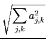

suivant: Norme ld'une matrice
monter: Les différentes norme d'une
précédent: Les différentes norme d'une
Table des matières
Index
Norme l2 d'une matrice : nomm l2norm
norm (ou l2norm) a comme argument une matrice A (voir
aussi 6.39.1).
norm (ou l2norm) renvoie
 si l'argument est A = aj, k.
On tape :
norm([[1,2],[3,-4]])
ou
l2norm([[1,2],[3,-4]])
On obtient :
sqrt(30)
Documentation de giac écrite par Renée De Graeve